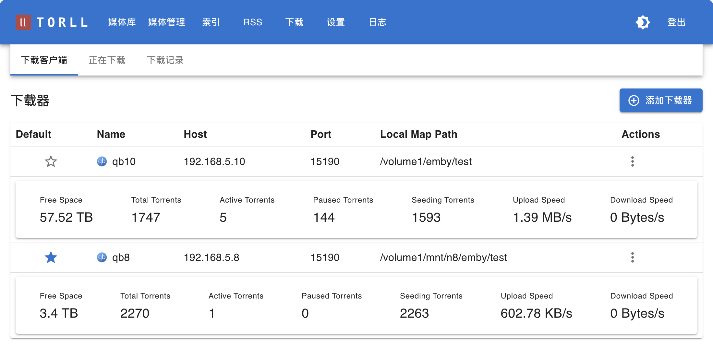

下载器处理模式
为了适应不同的部署环境，系统为每个下载客户端提供了三种文件处理模式。这些模式决定了当一个种子下载完成后，系统如何执行后续的“识别、重命名和创建硬链接”操作。


三种处理模式
您可以在 设置 -> 下载器 中，为每一个下载客户端单独配置处理模式。
1. local (本地处理模式)
- 描述: 这是默认模式。在此模式下，
torll2主程序会直接在它自己运行的服务器上执行所有的文件操作（重命名、创建硬链接）。 - 适用场景: 当
torll2和下载客户端（如 qBittorrent）运行在同一台物理机或虚拟机上，并且torll2可以直接访问下载完成的文件时。 - 配置:
- 处理模式:
local - 本地路径映射: 必须正确填写，指向媒体库的根目录。
- 处理模式:
- 系统会定时查询种子的下载情况，下载完成后会执行相应改名硬链操作，不需要配置 qbittorrent 的下载完成后执行脚本
2. agent (远程代理模式)
- 描述: 在此模式下，
torll2会通过网络调用一个运行在下载机上的轻量级RCP Agent程序。所有文件操作（重命名、创建硬链接）都由这个 Agent 在远程下载机上完成。 - 适用场景: 当
torll2和下载客户端运行在不同的服务器上时。例如，torll2运行在A服务器，而qBittorrent运行在B服务器。 - 配置:
- 处理模式:
agent - RCP Agent URL: 必须填写，指向远程下载机上
rcp_agent.py服务的地址（例如http://192.168.1.10:8088）。 - 本地路径映射: 此项在此模式下无效，因为路径处理由 Agent 在远程完成。
- 处理模式:
- 系统会定时查询种子的下载情况，下载完成后会向远程运行的rcp_agent请求执行相应改名硬链操作，不需要配置 qbittorrent 的下载完成后执行脚本
3. legacy (兼容旧模式)
- 描述: 在此模式下，
torll2不会主动对下载完成的任务进行任何操作。它依赖于一个外部脚本（例如由 qBittorrent 的“下载后运行”功能触发的rcp.py脚本）来调用torll2的一个特定 API (/api/torcp/process_tor) 来上报信息并请求处理。 - 适用场景: 用于兼容旧的、由下载器主动触发的工作流程，或用于一些高级自定义场景。在这种模式下，torll2 的 "重建硬链" 和 "修改媒体项目" 对于远程服务器是不可用的。
- 配置:
- 处理模式:
legacy - 其他相关配置均在此模式下无效。
- 处理模式:
- 对于入库来说，这种方式不依赖定时查询，工作稳定可靠。但是对于远程下载器，
legacy方式不能进行远程修改和重建。
手动修改和重建硬链
- 采用
local模式的下载器，如果本地路径映射配置正确，在媒体管理页面，可以对媒体进行手动修改和重建硬链； - 采用
agent模式的下载器，手动修改和重建硬链命令，会发给远程下载器同机运行的rcp_agent执行相应命令；
已知问题：
- 在单机运行场景下，设置
legacy或local, 都应能成功完成硬链的初始建立、修改和重建；在有远程下载机情况下，有以下已知问题：- 重建硬链时，会先删除所有当前媒体目录，如果一个TMDb 媒体是由多个下载器分别下载然后组合而成，则会删第1个下载器所对应的下载目录(下载器的 local_map_path 与 媒体的 emby_relpath 拼合)；
- 设置为
legacy模式的下载器，点击重建硬链， 会和local一样操作，此时如果下载器在远程，则无法创建新的硬链；
- 对单个媒体条目 (MediaItem) 修改，也会进行原硬链目录的删除，因此对剧集中的一集进行了修改，或对一个电影的其中一个版本的修改，整个媒体硬链目录都被删除了；需要对TMDb 媒体作重建；